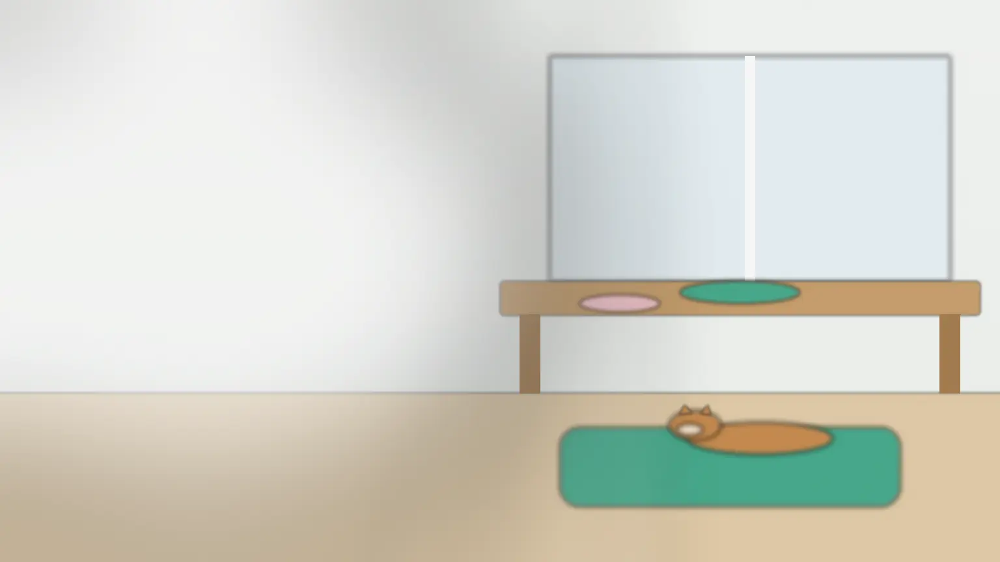
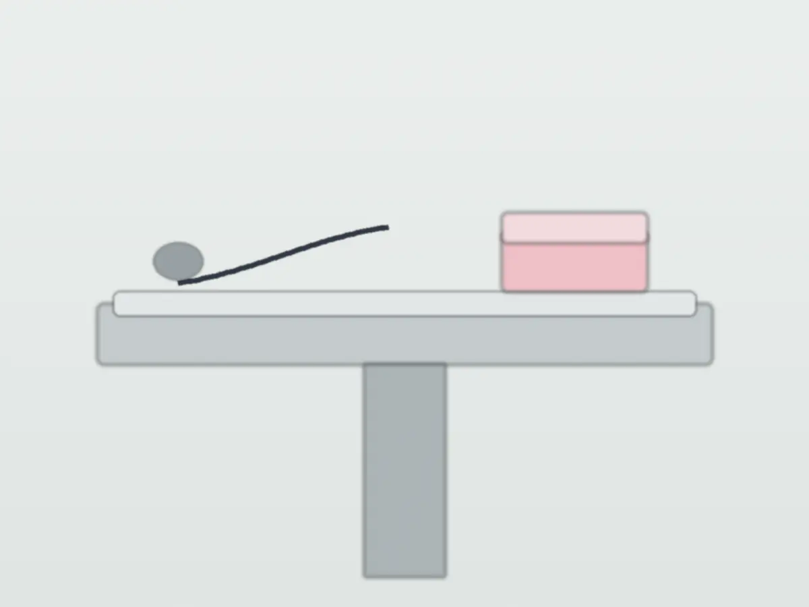
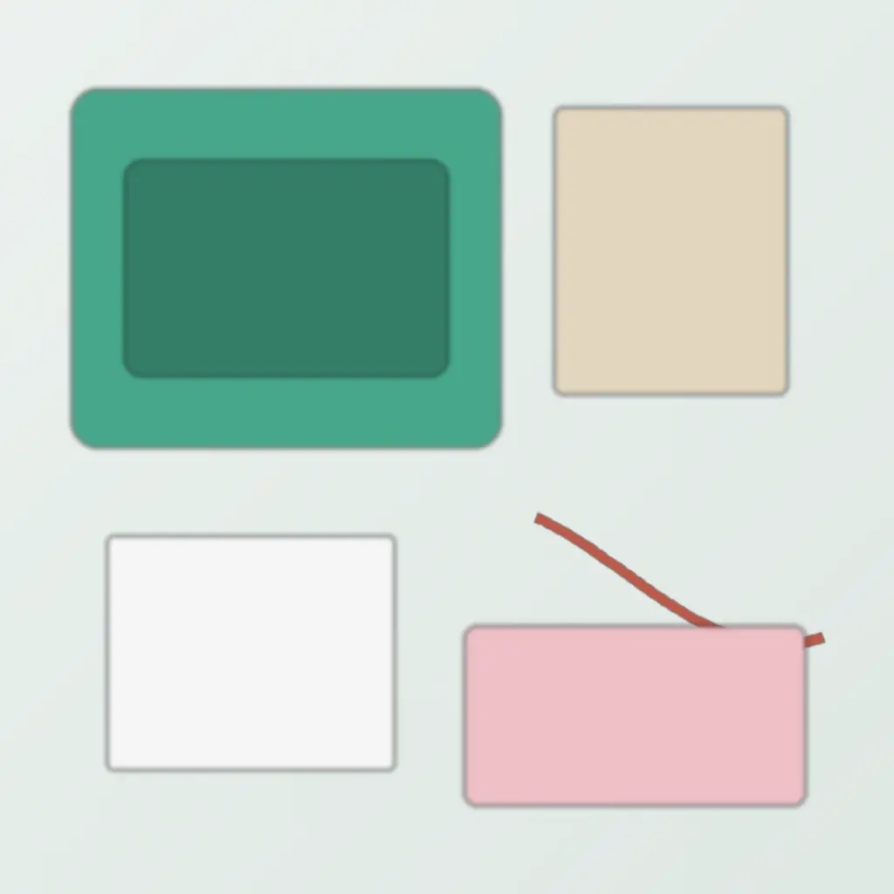
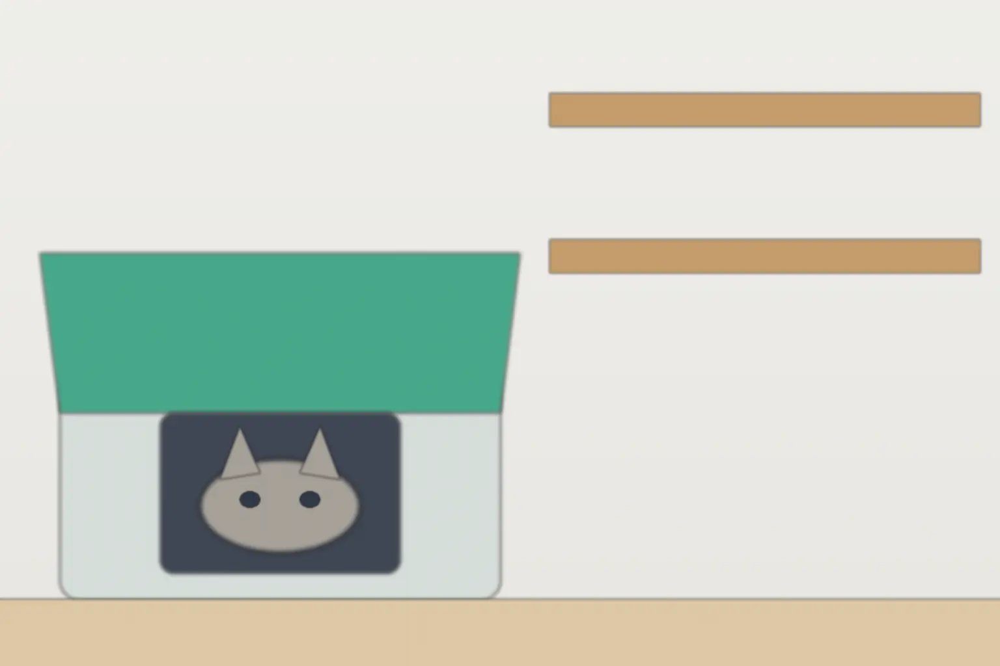

犬と猫の、
近くの病院です。
診察・予防接種・健康診断・簡単な手術をしています。
夜間の救急はしていません（近くの夜間病院をご案内します）。
- 診療時間
- 9:00–12:0016:00–19:00水・日の午後と祝日は休み
- 料金の目安
- 初診 1,650円〜税込・見本用の架空価格。料金を見る
- 電話の受付
- 診療時間内予約も、相談だけでも
相談だけでも構いません。検査や治療は、説明して納得していただいてから行います。Webの予約・相談への返信は、翌診療日までに。

できること、
していないこと。
しています
- 診察体調がおかしい、食べない、吐いたなど
- 予防接種混合ワクチン、狂犬病の予防注射
- 健康診断血液検査とからだの触診
- 簡単な手術避妊・去勢、小さなできもの
していません
- 夜間の救急近くの夜間病院の場所と電話番号をお伝えします
- 犬と猫以外うさぎや鳥は、診られる病院をご案内します
- 大きな手術設備のある病院へ紹介します

初めて来るときは。

持ってくるもの
- 1キャリーかリード猫はキャリーに入れてください
- 2ワクチンの証明書あれば。前の病院の書類も
- 3ふだんのごはんの名前袋の写真でも構いません
- 4気になる様子のメモいつから・どんなときに
- 5タオル1枚キャリーにかけると落ち着きます
受付から会計まで
- 受付名前と、来た理由を伝える
- 問診票5分ほど。待合で書けます
- 診察先に説明し、費用の目安を伝えます
- 会計現金・カード・電子マネー
初めての日は、全部で40〜60分ほどです。
猫と犬は、
待つ場所を分けています。
入口を入って左が猫の待合、右が犬の待合です。猫の待合には高い棚があり、キャリーを床より高いところに置けます。
- キャリーには、タオルをかけたままで大丈夫です
- 犬はリードを短めに持って、右の待合へ
- 鳴き声が心配なときは、車の中で待って呼び出しも受けられます

料金の目安と、
追加の費用が出るとき。
| 初診料 | 1,650円 |
|---|---|
| 再診料 | 880円 |
| 混合ワクチン（犬） | 6,600〜8,800円 |
| 混合ワクチン（猫） | 4,950〜6,600円 |
| 健康診断（血液検査つき） | 8,800円〜 |
追加の費用が出るのは
- 検査が必要になったとき（レントゲン・エコーなど）
- お薬を出すとき（日数で変わります）
- 時間外に診るとき
どの場合も、先に費用の目安をお伝えしてから行います。迷ったら、その日は見送っても構いません。
よくある質問
予約しないと診てもらえませんか？
予約なしでも診ます。予約の方を先にお呼びするため、お待たせすることがあります。
ペット保険は使えますか？
使えます。窓口で精算できる保険かどうかは、受付でお確かめください。
猫がキャリーに入ってくれません。
前の日からキャリーを部屋に出し、中にタオルを入れておくと入りやすくなります。電話でもご相談ください。
夜に具合が悪くなったら？
当院は夜間の救急をしていません。近くの夜間病院の場所と電話番号を、待合の掲示とお電話でお伝えしています。